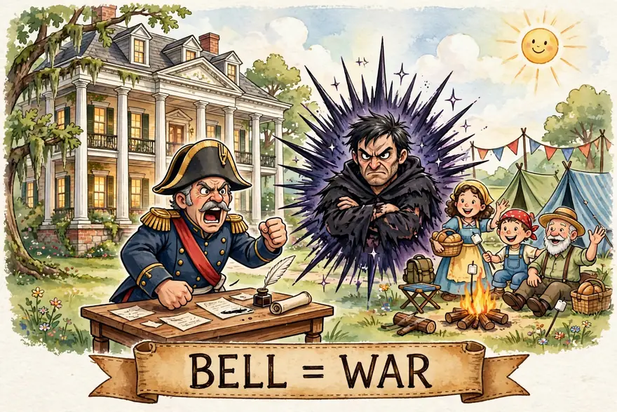
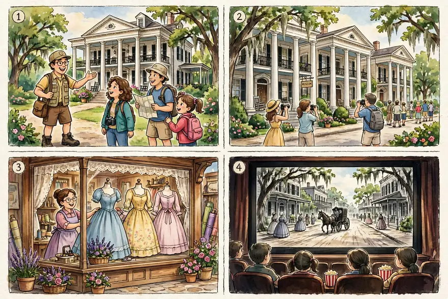
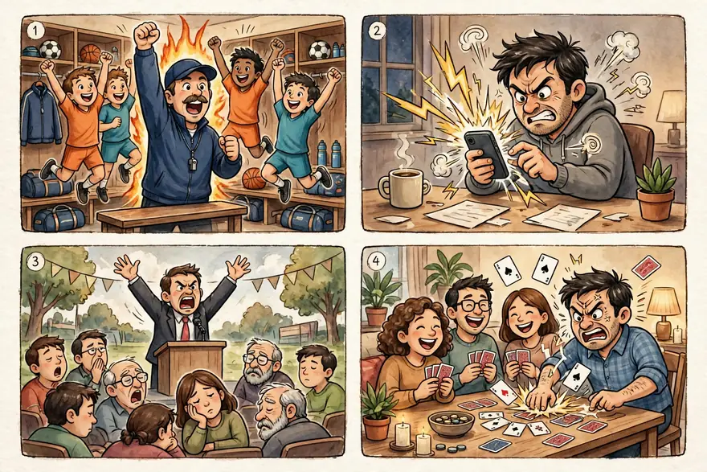
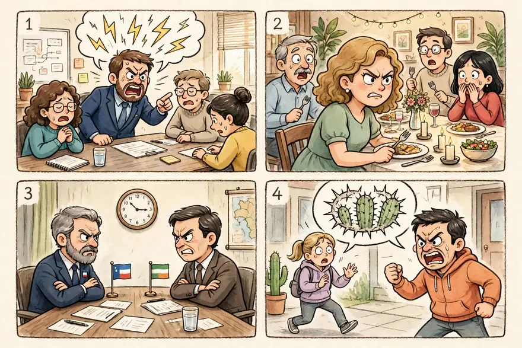
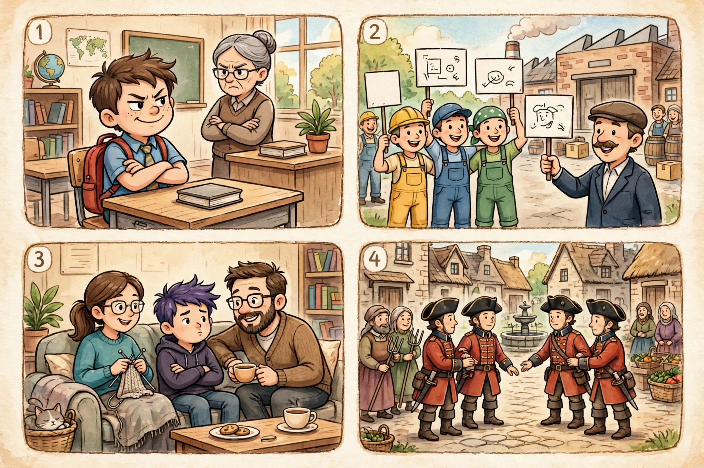
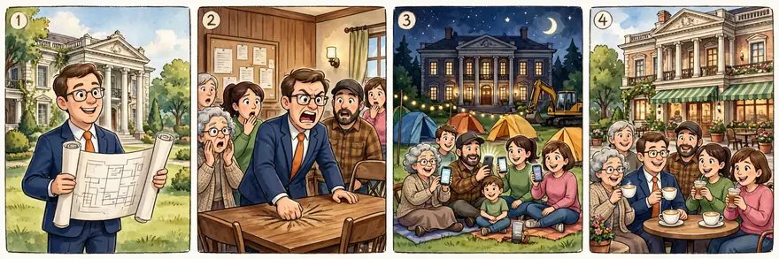

点开单元看词根；带链接的是已上线词根，其余陆续制作中。
词汇课首页 › Unit 1 › BELL
🔊 词根发音：/bel/（和英文单词 bell「铃铛」同音同形——就记成：战争的警钟敲响了）
A small town in Georgia has gone to war over a house. The town council wants to tear down an antebellum mansion — one of the last homes built before the Civil War — and replace it with a shopping mall. At Tuesday's meeting, the mayor grew so bellicose that he banged the table and threatened to fine anyone who protested. His belligerence only lit the fuse: by Friday, hundreds of residents had launched a cheerful rebellion, camping on the mansion's lawn with tents, guitars and a banner. The mayor, suddenly much less bellicose, has agreed to "talk again next week."
本则为自创热点段子：词是真的，事是编的——antebellum、bellicose、belligerence、rebellion 四个词一个不少，全在里面。
BELL comes from the Latin word meaning “war.” Bellona was the little-known Roman goddess of war; her husband, Mars, was the god of war.
BELL 一家全和「打」有关，但分工清楚：antebellum 是打之前，bellicose 是想打，belligerence 是打的气场，rebellion 是反过来打。今天这一课，把四种「战况」一次分清。

在图片中，左边是一座白色圆柱的大宅子，对应 antebellum（战前的老宅）；左下角一位穿军装的将军正拍着桌子大喊，对应 bellicose（好战的）；中间的黑衣男子抱着胳膊、瞪着眼睛，身后是一圈尖刺状的黑光，对应 belligerence（敌意、火药味）；右边几位镇民在帐篷和篝火旁笑着挥手，他们正在保卫这座老宅，对应 rebellion（反抗）。最下方横幅上写着 BELL = WAR。
Existing before a war, especially before the American Civil War (1861–65).
• When World War I was over, the French nobility found it impossible to return to their extravagant antebellum way of life.
Even countries that win a war often end up worse off than they had been before, and the losers almost always do. So antebellum often summons up images of ease, elegance, and entertainment that disappeared in the postwar years. In the American South, the antebellum way of life depended on a social structure, based on slavery, that collapsed after the Civil War; Margaret Mitchell's Gone with the Wind shows the nostalgia and bitterness felt by wealthy Southerners after the war more than the relief and anticipation experienced by those released from slavery. In Europe, World War I shattered the grand life of the upper classes, even in victorious France and Britain, and changed society hugely in the space of just four years.
战前的；尤指美国内战（1861–65）前的。
例句：一战结束后，法国贵族发现自己再也回不到战前那种奢华的生活方式了。
即使是战胜国，战后往往也比战前更糟，战败国几乎无一例外。所以 antebellum 常常唤起人们对战后消失的那种安逸、优雅、娱乐生活的想象。在美国南方，战前的生活方式依赖于建立在奴隶制之上的社会结构，内战后轰然倒塌；玛格丽特·米切尔的《飘》展现的，更多是战后富裕南方人的怀旧与怨恨，而非获得解放的人们的宽慰与期待。在欧洲，第一次世界大战击碎了上流社会的奢华生活，即使在获胜的法国和英国也是如此，短短四年间社会发生了巨变。
—— 下面是我的讲解 ——
🧠 记忆妙招：拆开看：ante- 是「在……之前」（产前检查 antenatal、先例 antecedent 都是它），bellum 就是 BELL 本人——战争。所以 antebellum = 战争之前。画面直接调《飘》：白柱子大宅、舞会、长裙，斯嘉丽站在门廊上——炮声一响，那个世界就没了。记住这个「回不去的旧时光」滤镜，就记住了这个词的全部味道。
💡 场合与语境：历史书、小说影评、旅游讲解、美国南方文化话题是它的主场；日常说「战前的」用 pre-war 更普通，antebellum 默认特指美国内战前，也可借指任何一场大战之前。
🔁 高级替换：写老宅、旧时代风貌时用它，一词自带画面：an antebellum mansion 比 an old house 精确得多。
⚠️ 注意：它常和奴隶制历史绑定（antebellum South），用它怀旧南方旧生活时，严肃写作要留意语气；重音在中间：an-ti-BEL-lum。
写作：写历史小说、影评、文化对比时用它点出「旧时代」的氛围，一个词顶一句描写。
✏️ 拼写：ante-bel-lum，ante-（在……之前）+ bellum（战争），双 l。
例句：

图片四格与下面 ①②③④ 四个例句一一对应。
① The tour guide showed us a beautiful antebellum house with tall white columns.
导游带我们看了一座漂亮的战前老宅，有高高的白色圆柱。
② Many antebellum mansions in the South are now museums.
南方许多战前大宅如今都成了博物馆。
③ She collects antebellum dresses and displays them in her shop window.
她收藏战前时期的裙子，摆在自家店的橱窗里展示。
④ The film opens in an antebellum town in Georgia.
这部电影开场是佐治亚州的一座战前小镇。
Warlike, aggressive, quarrelsome.
• The more bellicose party always got elected whenever there was tension along the border and the public believed that military action would lead to security.
Since bellicose describes an attitude that hopes for actual war, the word is generally applied to nations and their leaders. In the 20th century, it was commonly used to describe such figures as Germany's Kaiser Wilhelm, Italy's Benito Mussolini, and Japan's General Tojo, leaders who believed their countries had everything to gain by starting wars. The international relations of a nation with a bellicose foreign policy tend to be stormy and difficult, and bellicosity usually makes the rest of the world very uneasy.
好战的；挑衅的；好斗的。
例句：每当边境局势紧张、公众相信军事行动会带来安全时，好战的那一方总是能当选。
既然 bellicose 形容的是一种盼望真正开战的态度，这个词一般用在国家及其领导人身上。20 世纪，人们常用它来形容德国的威廉皇帝、意大利的墨索里尼、日本的东条英机这样的人物——他们都相信自己的国家发动战争有利可图。一个奉行好战外交政策的国家，其国际关系往往风波不断、困难重重，而 bellicosity（好战）通常会让世界其他国家非常不安。
—— 下面是我的讲解 ——
🧠 记忆妙招：bell（战争）+ 一身火药味。画面：一位领导对着话筒拍桌子，唾沫横飞，句句都是「打就打，谁怕谁」。bellicose 形容的不是正在打仗，而是那种盼着打起来、随时想掀桌的态度。再配个日常版：评论区里动不动就「你出来，咱俩练练」的人，也是 bellicose。
💡 场合与语境：新闻评论、时事分析里形容国家、政客、言论好战挑衅，是它的主场；日常也能半开玩笑地形容人火气大、爱抬杠。
🔁 高级替换：aggressive 太普通，bellicose 自带「盼着开战」的书面腔，写评论立刻显水平；常见搭配 bellicose rhetoric（好战言论）、a bellicose leader。
⚠️ 注意：它说的是态度倾向，不是正在交战；真在打仗的「交战方」用名词 belligerent，别混。
写作：时评、议论文里批评好战言论时用，bellicose rhetoric（好战言论）是评论员的常用搭配。
✏️ 拼写：bel-li-cose，双 l，结尾是 -cose 不是 -cous。
例句：

图片四格与下面 ①②③④ 四个例句一一对应。
① The coach's bellicose talk before the match fired up the whole team.
比赛前教练那番好战的动员，把全队都点燃了。
② His bellicose tweets started another online war.
他那些挑衅的推文又引发了一场网络骂战。
③ Voters are tired of the leader's bellicose speeches.
选民已经厌倦了这位领导人好战的演讲。
④ Don't be so bellicose — it's only a card game.
别这么好斗——这不过是一场牌局而已。
Aggressiveness, combativeness.
• The belligerence in Turner's voice told them that the warning was a serious threat.
Unlike bellicose and bellicosity, the word belligerence can be used at every level from the personal to the global. The belligerence of Marlon Brando's performances as the violent Stanley Kowalski in A Streetcar Named Desire electrified the country in the 1940s and '50s. At the same time, belligerent speeches by leaders of the Soviet Union and the United States throughout the Cold War were keeping the world on edge. Belligerent is even a noun; the terrible war in the Congo in recent years, for example, has involved seven nations as belligerents.
好战；敌对态度。
例句：特纳声音里的敌意告诉他们，这警告是认真的、是个严重的威胁。
与 bellicose 和 bellicosity 不同，belligerence 这个词从个人层面到全球层面都用得上。马龙·白兰度在《欲望号街车》中饰演粗暴的斯坦利·科瓦尔斯基，他表演中的那股好斗劲儿在上世纪四五十年代震撼了整个美国。与此同时，冷战期间苏联和美国领导人发表的好斗演说，也让全世界一直提心吊胆。belligerent 甚至还是个名词；比如近年来刚果那场可怕的战争，就有七个国家作为交战方（belligerents）卷入其中。
—— 下面是我的讲解 ——
🧠 记忆妙招：它是 bellicose 的名词版「气场」：人还没动手，空气已经打起来了。画面：谈判桌对面那个人抱着胳膊、瞪着眼，一开口就怼——这股「别惹我」的劲儿就是 belligerence。拼写小心中间的 -ger-：读 /dʒ/，像 gerbil（沙鼠）开头的 ger，写错成 -gar- 就露馅了。
💡 场合与语境：从个人语气到国际关系都通吃的「万能火药味」词：会议上的敌意、评论区的戾气、外交辞令的强硬，都是它。
🔁 高级替换：hostility 更直白，belligerence 更书面、更像评论员的笔法；in a tone of open belligerence（带着公开的敌意）是很地道的搭配。
⚠️ 注意：结尾是 -ence 不是 -ance；形容词 belligerent 还能当名词用，指「交战方」。
写作：写冲突场景时不用写「他很生气」，一句 the belligerence in his voice 就把火药味写出来了。
✏️ 拼写：bel-li-ge-rence；-ger- 发 /dʒ/；与 bellicose 同词根，可对照记。
例句：

图片四格与下面 ①②③④ 四个例句一一对应。
① I could hear the belligerence in his voice during the meeting.
开会时，我能听出他声音里的火药味。
② Her belligerence surprised everyone; she is usually so calm.
她的敌对态度让所有人吃惊，她平时明明很冷静。
③ The talks ended early because of the belligerence on both sides.
由于双方都带着敌意，会谈提前结束了。
④ He answered my question with open belligerence.
他带着明显的敌意回答了我的问题。
Open defiance and opposition, sometimes armed, to a person or thing in authority.
• A student rebellion that afternoon in Room 13 resulted in the new substitute teacher racing out of the building in tears.
Plenty of teenagers rebel against their parents in all kinds of ways. But a rebellion usually involves a group. Armed rebellions are usually put down by a country's armed forces, or at least kept from expanding beyond a small area. The American War of Independence was first viewed by the British as a minor rebellion that would soon run its course, but this particular rebellion led to a full-fledged revolution—that is, the overthrow of a government. Rebellion, armed or otherwise, has often alerted those in power that those they control are very unhappy.
公开反抗、反对当权者或权威，有时是武装反抗。
例句：那天下午 13 号教室里的一场学生造反，结果是新来的代课老师哭着跑出了教学楼。
很多青少年会用各种方式反抗父母。但 rebellion 通常涉及一群人。武装叛乱通常会被一国的武装力量镇压，至少会被控制在小范围内。美国独立战争起初被英国人看作一场很快就会平息的小叛乱，但这场叛乱最终演变成了一场全面的革命——也就是推翻了一个政府。无论武装与否，rebellion 常常向当权者发出信号：被他们统治的人非常不满。
—— 下面是我的讲解 ——
🧠 记忆妙招：re-（反过来）+ bell（战争）= 反过来打，就是反抗。画面分两档：小到你家娃把不爱吃的青菜全挑出来、藏到碗底——餐桌上的 rebellion；大到独立战争，一群人把统治者赶下台。记住：rebellion 不一定是坏词，很多改变都是从一句「凭什么」开始的。
💡 场合与语境：历史（起义、独立战争）、社会新闻（抗议）、家庭教育（青春期叛逆）三界通吃。
🔁 高级替换：它比 protest 大、比 revolution 小：rebellion 是「正在造反、还没成事」，revolution 是「已经改朝换代」；写青少年，teenage rebellion 是固定说法。
⚠️ 注意：动词 rebel 重音在后（re-BEL，我反抗），名词「叛逆者」rebel 重音在前（REB-el）——同一个拼写，重音移位，读错立刻听出来。
写作：写成长、家庭、历史题材都能用；teenage rebellion（青春期叛逆）几乎是写孩子题材的必备词。
✏️ 拼写：re-bel-lion，双 l，结尾 -ion。
例句：

图片四格与下面 ①②③④ 四个例句一一对应。
① Forgetting to do homework was his small rebellion against the strict teacher.
不写作业是他对严厉老师的小小反抗。
② The workers' rebellion forced the factory to raise wages.
工人们的抗争迫使工厂提高了工资。
③ Teenage rebellion is a normal part of growing up.
青春期的叛逆是成长过程中正常的一部分。
④ The rebellion was quickly put down by the army.
这场叛乱很快被军队镇压了。
小镇上最后一座 antebellum 老宅要被拆了，开发商老板说话 bellicose，句句带火药味；他那副 belligerence 的模样把镇民惹急了，大家连夜组织了一场 rebellion——不是举武器，是举着手机直播拆房现场，硬是把挖掘机「请」了回去。老宅保住了，开发商也改口说要把它修成咖啡馆。你看，有时候「造反」造的不是反，是道理。

🌍 英文版：
The last antebellum house in a small town was about to be torn down, and the developer sounded downright bellicose — every sentence full of gunpowder. His belligerence finally provoked the townspeople, who organized a rebellion overnight: not with weapons, but with phones, livestreaming the demolition site until the excavator was politely "escorted" away. The old house was saved, and the developer now says he will turn it into a café. Sometimes a rebellion is not about fighting back; it is about standing your ground.
| 历史、小说、影评、老宅旅游 | antebellum 战前的（尤指美国内战前） |
| 时事评论、政客言论 | bellicose 好战的、挑衅的 |
| 语气、态度带火药味（个人到国家） | belligerence 敌意、好斗 |
| 历史起义、社会抗议、青春期叛逆 | rebellion 反抗、叛乱 |
1. The museum displays photographs of New Orleans.
2. His remarks shocked the reporters at the press conference.
3. There was no in her tone; she simply stated the facts.
4. What began as a small grew into a nationwide movement.
听写（看中文打英文）：
① 战前的（尤指美国内战前）
② 好战的、挑衅的
③ 好战、敌对态度
④ 反抗、叛乱
1. The museum displays photographs of antebellum New Orleans.
博物馆展出了战前新奥尔良的照片。
2. His bellicose remarks shocked the reporters at the press conference.
他在记者会上的好战言论震惊了记者们。
3. There was no belligerence in her tone; she simply stated the facts.
她的语气里没有敌意，只是陈述了事实。
4. What began as a small rebellion grew into a nationwide movement.
最初只是一场小小的反抗，后来发展成了全国性的运动。
听写：① antebellum（战前的（尤指美国内战前）） ② bellicose（好战的、挑衅的） ③ belligerence（好战、敌对态度） ④ rebellion（反抗、叛乱）
活用 30 秒：出声说一句自己的真事，比如 My son’s small rebellion today was hiding his vegetables under the rice. 说完发给我。